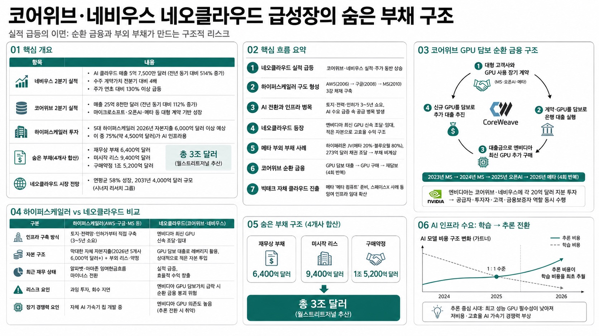

https://www.youtube.com/@videomug0MORNING DIGEST · 2026-08-27 · https://www.youtube.com/@videomug0🎬 영상
코어위브·네비우스 네오클라우드 급성장의 숨은 부채 구조

01핵심 개요 (표)
항목
내용
채널
오그랩(비디오머그)
핵심 주제
네오클라우드(코어위브·네비우스)의 급성장 배경과 비즈니스 모델 리스크
네비우스 2분기 실적
AI 클라우드 매출 5억 7,500만 달러(전년 동기 대비 514% 증가), 수주 계약가치 전분기 대비 4배
네비우스 주가
연초 대비 130% 이상 급등
코어위브 2분기 실적
매출 25억 8천만 달러(전년 동기 대비 112% 증가)
5대 하이퍼스케일러 2026년 자본지출
6,000억 달러 이상 예상, 이 중 75%(약 4,500억 달러)가 AI 인프라용
하이퍼스케일러 숨은 부채(4개사 합산)
재무상 부채 6,400억 달러 + 미시작 리스 9,400억 달러 + 구매약정 1조 5,200억 달러 (월스트리트저널 추산 총 3조 달러)
네오클라우드 시장 전망
연평균 58% 성장, 2031년 4,000억 달러 규모(시너지 리서치 그룹)
02핵심 기능/내용 구조
네오클라우드의 실적 급등: 코어위브·네비우스가 시장 기대를 웃도는 실적을 내며 주가도 함께 상승. 네비우스는 AI 클라우드 매출이 전년 동기 대비 514% 급증한 5억 7,500만 달러를 기록했고, 코어위브도 112% 증가한 25억 8천만 달러 매출을 냈다.
클라우드 컴퓨팅의 역사와 하이퍼스케일러 구도 형성: 2006년 아마존 AWS 출시(2개월 만에 아마존닷컴 전체 컴퓨팅 용량 초과 수요)를 시작으로, 2008년 구글, 2010년 마이크로소프트 애저가 진입하며 아마존·구글·마이크로소프트 3강 '하이퍼스케일러' 체제가 형성됐다.
AI로 인한 클라우드 시장 재편과 인프라 구축 병목: 클라우드 수요가 단순 저장·연산 공유에서 AI 학습·추론 중심으로 전환됐지만, 전통 데이터센터는 AI에 맞게 설계되지 않아 하이퍼스케일러들이 대규모 설비투자에 나섰다. 그러나 토지 확보·전력망 구축·인허가에 통상 3~5년이 걸려 AI 수요 급증 속도를 따라가지 못하는 공급 병목이 발생했다.
네오클라우드의 등장과 성장 동력: 이 공급 병목을 파고들어 엔비디아 최신 GPU를 신속히 조달·임대하는 것이 네오클라우드의 사업 모델이다. 하이퍼스케일러의 막대한 재정 부담(잉여현금흐름 마이너스 전환) 속에서 상대적으로 적은 자본으로 효율적으로 수익을 내는 구조가 투자자 관심을 끌었다.
메타의 부외(簿外) 부채 사례 — 하이페리온 데이터센터: 메타는 루이지애나에 짓는 초대형 AI 데이터센터 '하이페리온'(센트럴파크 4배 규모)을 자산운용사 블루오웰 캐피탈과 조인트벤처(메타 20%·블루오웰 80% 지분)로 건설, 273억 달러 채권 발행으로 자금을 조달해 메타 장부상 직접 부채로 잡히지 않도록 했다. 완공 후 메타는 임대료를 지급할 예정이다.
코어위브의 GPU 담보 순환 금융 구조: 원래 이더리움 채굴업체였던 코어위브는 코인 시장 침체 후 보유 GPU를 챗GPT 붐에 맞춰 임대업으로 전환. 마이크로소프트(2023년)·오픈AI(2024년)·메타(2026년)와의 대형 계약을 담보로 총 4차례 GPU 대출을 받았고, 대출금으로 다시 엔비디아 GPU를 구매해 추가 담보로 삼는 순환 구조를 반복했다. 엔비디아는 코어위브·네비우스 각각에 20억 달러씩 지분 투자까지 해 공급자·투자자·고객·금융보증자 역할을 동시에 수행 중이다.
메타의 자체 클라우드 사업 진출설과 스페이스X 선례: 메타는 올해 초까지 네비우스(5년 270억 달러)·코어위브와 대형 계약을 맺은 고객이었으나, 인프라 투자 대비 AI 성적표가 부진하자 남는 GPU를 외부 임대하는 '메타 컴퓨트' 사업을 준비 중이라는 보도가 나왔다. 이미 스페이스X는 xAI 데이터센터 '콜로서스'의 여유 인프라를 앤트로픽(월 12억 5천만 달러)·구글(10월부터 월 9억 2천만 달러)에 임대해 유사한 수익 모델을 실증하고 있다.
03기술적 맥락
클라우드 컴퓨팅: 서버·스토리지·데이터베이스·네트워크 등 인프라 자원을 인터넷을 통해 온디맨드로 제공하는 시스템으로, 이용자가 인프라를 직접 구매·구축할 필요 없이 사용한 만큼 비용을 지불한다.
AI 인프라 수요의 학습→추론 전환: 가트너 자료에 따르면 2024년까지는 AI 모델 학습(training) 비용이 추론(inference) 비용보다 컸으나, 2025년 1:1 수준으로 근접했고 2026년 처음으로 추론 비용이 학습 비용을 추월했다(AMD CEO 리사 수도 동일한 흐름을 언급). 추론 중심 시대에는 최고 성능 GPU가 필수가 아니게 되어 저비용·고효율 AI 가속기의 입지가 커질 수 있다.
04전략적 의미
네오클라우드는 하이퍼스케일러의 자본지출 부담과 인프라 구축 리드타임이라는 구조적 빈틈에서 성장했지만, 그 성장 자체가 GPU를 담보로 한 대출→GPU 재구매→재담보라는 순환 금융에 크게 의존하고 있어 엔비디아 GPU 가치가 급락할 경우 연쇄 리스크에 노출될 수 있다.
빅테크의 클라우드 계약이 재무제표상 부채로 완전히 드러나지 않는 조인트벤처·리스·구매약정 형태로 급증하고 있어(4개사 합산 3조 달러 규모 추산), 표면적 실적 호조 이면의 재무 건전성 리스크를 별도로 살펴야 한다.
AI 인프라 수요가 학습에서 추론으로 이동하면 최고 성능 엔비디아 GPU에 의존하는 네오클라우드의 경쟁우위가 약화되고, 자체 칩을 개발 중인 3대 하이퍼스케일러가 다시 주도권을 되찾을 가능성이 있어 네오클라우드의 장기 지속가능성은 불확실하다.
05핵심 워크플로우 또는 비교표
하이퍼스케일러 vs 네오클라우드 비교
구분
하이퍼스케일러(AWS·구글·MS 등)
네오클라우드(코어위브·네비우스)
인프라 구축 방식
토지·전력망·인허가부터 직접 구축(3~5년 소요)
엔비디아 최신 GPU 신속 조달·임대
자본 구조
막대한 자체 자본지출(2026년 5개사 6,000억 달러+) + 부외 리스·약정
GPU 담보 대출로 레버리지 활용, 상대적으로 적은 자본 투입
최근 재무 상태
알파벳·아마존 잉여현금흐름 마이너스 전환
실적 급증, 효율적 수익 창출
리스크 요인
과잉 투자, 회수 지연
엔비디아 GPU 담보가치 급락 시 순환 금융 붕괴 위험
장기 경쟁력 요인
자체 AI 가속기 칩 개발 중
엔비디아 GPU 의존도 높음(추론 전환 시 취약)
코어위브 GPU 담보 대출 순환 구조
대형 고객사(마이크로소프트·오픈AI·메타)와 GPU 사용 장기 계약 체결
해당 계약 및 보유 GPU를 담보로 은행에서 대출 실행
대출금으로 엔비디아 최신 GPU 추가 구매
신규 구매 GPU를 다시 담보 삼아 추가 대출 추진(4회 반복: 2023년 MS, 2024년 MS, 2025년 오픈AI, 2026년 메타)
06활용 시나리오
AI 인프라 투자 리스크 분석 자료: 네오클라우드 및 하이퍼스케일러의 순환 금융·부외 부채 구조를 이해해 관련 주식(코어위브, 네비우스, 엔비디아 등) 투자 판단 시 재무 리스크 점검 체크리스트로 활용.
클라우드 산업 교육 콘텐츠: 클라우드 컴퓨팅의 역사(AWS 등장~하이퍼스케일러 3강 체제~AI발 재편)를 정리한 배경 설명으로 IT/경영 강의나 산업 분석 리포트의 도입부에 활용.
AI 반도체·데이터센터 밸류체인 브리핑: 엔비디아-네오클라우드-하이퍼스케일러 간 공급자·투자자·고객 관계가 얽힌 구조를 시각화해 반도체·데이터센터 밸류체인 분석 브리핑 자료로 재구성.
07현황 및 전망
코어위브·네비우스는 2026년 2분기 기준 실적과 주가 모두 시장 기대를 상회하며 강세를 보이고 있으나, 비즈니스 모델의 순환 금융 구조에 대한 우려도 병존한다.
시너지 리서치 그룹은 네오클라우드 시장이 연평균 58% 성장해 2031년 4,000억 달러 규모에 이르고, 2030년 전체 AI 클라우드 시장의 상당 부분을 차지할 것으로 전망한다.
메타의 '메타 컴퓨트' 자체 클라우드 진출설, 스페이스X의 xAI 인프라 외부 임대(앤트로픽·구글 대상) 사례 등 대형 AI 기업들이 자사 잉여 인프라를 임대해 수익화하는 흐름이 확산되고 있다.
AI 인프라 수요가 학습에서 추론으로 이동하는 추세(2026년 추론 비용이 학습 비용 최초 추월)가 이어지면, 최고 성능 엔비디아 GPU 의존도가 높은 네오클라우드보다 자체 칩을 보유한 하이퍼스케일러가 다시 주도권을 쥘 가능성이 제기된다.
08용어 사전
용어
설명
네오클라우드
엔비디아 GPU를 신속히 조달·임대해 AI 연산 인프라를 제공하는 신흥 클라우드 기업
하이퍼스케일러
전 세계 수백만 대 서버·수십 개 데이터센터를 운영하는 초대형 클라우드 기업(AWS·구글·MS 등)
클라우드 컴퓨팅
인터넷을 통해 서버·스토리지 등 컴퓨터 자원을 온디맨드로 이용하는 시스템
자본지출(CapEx)
데이터센터·설비 등 장기 자산 구축에 투입하는 지출
조인트벤처(JV)
두 기업이 지분을 나눠 공동 설립한 별도 법인, 자금 조달을 본체 재무제표에서 분리하는 데 활용될 수 있음
GPU 담보 대출
보유 GPU 자산 및 고객사와의 사용 계약을 담보로 실행하는 대출
순환 금융 구조
대출→자산 재구매→재담보 대출이 반복되며 관련 기업들의 실적이 동반 상승하는 금융 구조
잉여현금흐름(FCF)
영업활동 현금흐름에서 설비투자를 뺀 금액, 마이너스면 투자 대비 현금 창출이 부족함을 의미
학습(Training) vs 추론(Inference)
학습은 AI 모델을 만드는 연산, 추론은 완성된 모델을 실제 서비스에 적용해 답을 내는 연산